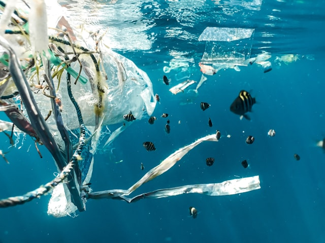

AI: Problem & Solution?
Synthesis
AI helps fight climate change, but training models contributes to it. Is the benefit worth the tradeoff?
Ethical Considerations
Which companies are leading by example? How can we encourage sustainable AI development across the board?
Expert & Public Opinions
We compare personal perspectives with those of environmental scientists and AI researchers.
Water and energy consumption
AI data centers consume significant energy and water, with two primary categories of electricity usage: powering the infrastructure and running IT equipment. While data centers aim for an ideal Power Usage Effectiveness (PUE) of 1.0, most have an average PUE of 1.6, where IT equipment accounts for about two-thirds of energy use and cooling systems about one-quarter. Training AI models like ChatGPT 3 and 4 demands enormous amounts of energy, with ChatGPT 4 consuming nearly 50 times the energy of ChatGPT 3. Even after training, deployed AI models still require substantial energy, influenced by factors like traffic and model size.
Water usage is also a major concern, as AI data centers rely on potable water for cooling, which is evaporated and removed from the source. For example, training ChatGPT 3 consumed over 5 million liters of water, and ChatGPT 4 likely uses even more. In addition to cooling, AI's water footprint extends to the supply chain, where ultra-pure water is needed to manufacture components, and hydro-electric power, though returned to its source, still consumes more water than national averages. These environmental impacts underscore the need for more sustainable practices in AI infrastructure.
Pollution and E-waste
The costs of maintaining Artificial Intelligence (AI) are becoming dangerously high, as E-waste keeps on polluting the world. It contains toxic chemicals that can cause permanent damage to the ecosystem and contaminate water. Since AI doesn’t seem to be going anywhere, there must be actions taken towards making it more environmentally friendly. Finding ways to reuse E-waste, producing components from long lasting materials, and limiting the carbon footprint companies produce are the most suggested solutions to combatting AI’s environmental damages.
Agriculture has seen many changes as AI started to become popular. Although the negative impacts of AI are undeniable, agriculture has benefited from AI’s help more than anything else. So far AI has helped farmers with determining water needs, estimating demand for products and predicting the weather to adjust accordingly.
What Do You Think?
Should we limit the growth of AI to protect the environment? Or do the benefits of using AI to predict and prevent climate damage outweigh the risks?
AI holds real promise in the fight against climate change—by making systems smarter, reducing emissions, and unlocking better climate science.
But it also comes with a cost: the energy and resources needed to train powerful models are significant, and not always sustainable. So, is it worth it?
It can be—if AI is built and used with purpose. When directed toward climate solutions, its benefits can far outweigh its carbon footprint.
But if it serves mostly commercial goals, the environmental cost becomes harder to defend.
The future impact of AI depends on how we choose to use it.